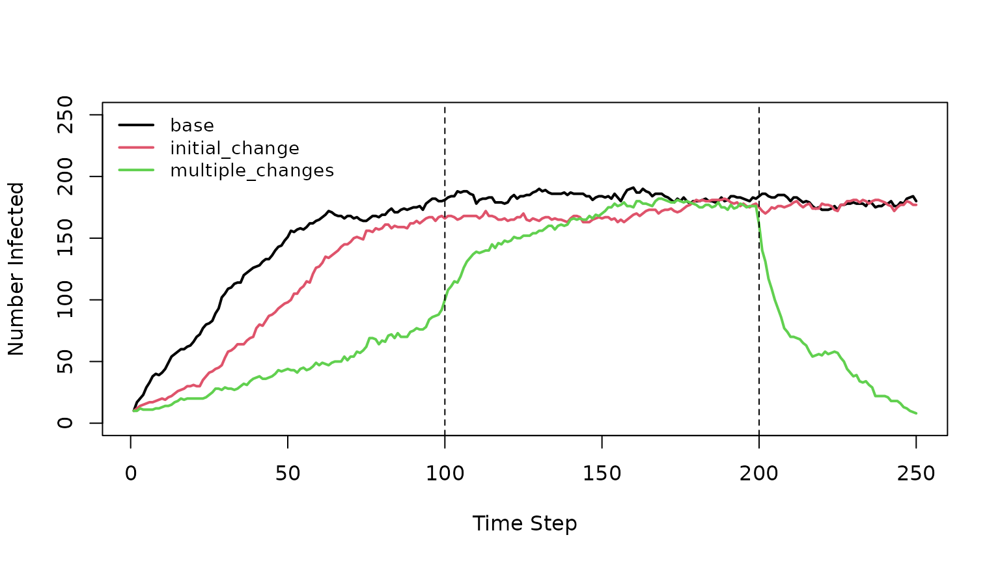
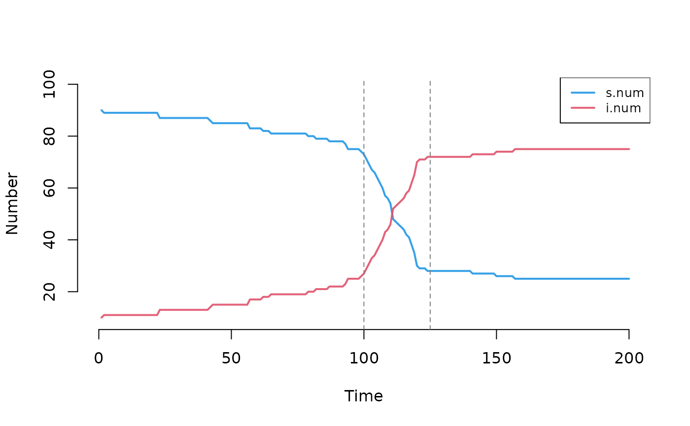

Working with Model Parameters in EpiModel
EpiModel v2.6.1
2026-04-01
Source:vignettes/model-parameters.Rmd
model-parameters.RmdIntroduction
This vignette assumes familiarity with setting up and running network models in EpiModel. See the Network Modeling for Epidemics (NME) course materials and the EpiModel Gallery for background.
For working with nodal attributes and epidemic summary statistics, see the companion vignette Working with Custom Attributes and Summary Statistics in EpiModel. For network objects and edgelists, see Working with Network Objects in EpiModel.
In a model, parameters are the input variables that define aspects of system behavior. In a basic SIS (Susceptible-Infected-Susceptible) model, these might include an infection probability, an act rate, and a recovery rate. In simple models, each parameter is a single fixed value that remains constant throughout a simulation. Real-world applications, however, often require more flexibility: parameters that change over time (e.g., to represent an intervention rollout or behavioral change during an epidemic), parameters drawn from distributions (for sensitivity analysis or calibration), or large parameter sets managed via spreadsheets.
This vignette demonstrates how to implement:
- Scenarios: Named sets of parameter changes applied at the start of a simulation or at specific time steps—the primary mechanism for time-varying parameters, counterfactual analysis, and intervention modeling.
-
Parameter input via tables: Passing many parameters
at once through a
data.frame, enabling spreadsheet-based parameter management. - Random parameters: Distributions of parameter values rather than single fixed values, for uncertainty quantification and sensitivity analysis.
- Parameter and control updaters (advanced): The low-level mechanism underlying scenarios, exposed directly for cases where the scenario API is not flexible enough.
Scenarios
Scenarios allow you to define named sets of parameter values that can change at specific time steps during a simulation. This is the recommended approach for implementing time-varying parameters—for example, modeling an intervention that reduces transmission probability partway through an epidemic, or comparing multiple policy alternatives.
Our research paper implementing time-varying parameter scenarios for COVID-19 sexual distancing interventions was published in the Journal of Infectious Diseases. The code can be found here.
Setup
First, we set up a simple SIS model as the base case.
set.seed(10)
nw <- network_initialize(n = 200)
est <- netest(nw,
formation = ~edges, target.stats = 60,
coef.diss = dissolution_coefs(~offset(edges), 10, 0), # duration = 10, closed population
verbose = FALSE
)
#> Starting simulated annealing (SAN)
#> Iteration 1 of at most 4
#> Finished simulated annealing
#> Starting maximum pseudolikelihood estimation (MPLE):
#> Obtaining the responsible dyads.
#> Evaluating the predictor and response matrix.
#> Maximizing the pseudolikelihood.
#> Finished MPLE.
param <- param.net(inf.prob = 0.9, rec.rate = 0.01, act.rate = 2)
init <- init.net(i.num = 10)
control <- control.net(type = "SIS", nsims = 1, nsteps = 250, verbose = FALSE)Scenario Definitions
Scenarios are defined using create_scenario_list, which
takes a specially formatted data.frame as input and outputs
a list of scenarios usable by EpiModel. We use
tibble::tribble here for readability, but any
data.frame constructor works.
library(dplyr)
#>
#> Attaching package: 'dplyr'
#> The following objects are masked from 'package:stats':
#>
#> filter, lag
#> The following objects are masked from 'package:base':
#>
#> intersect, setdiff, setequal, union
scenarios.df <- tribble(
~.scenario.id, ~.at, ~inf.prob, ~rec.rate,
"base", 0, 0.9, 0.01,
"initial_change", 0, 0.2, 0.01,
"multiple_changes", 0, 0.1, 0.04,
"multiple_changes", 100, 0.9, 0.01,
"multiple_changes", 200, 0.1, 0.1
)
knitr::kable(scenarios.df)| .scenario.id | .at | inf.prob | rec.rate |
|---|---|---|---|
| base | 0 | 0.9 | 0.01 |
| initial_change | 0 | 0.2 | 0.01 |
| multiple_changes | 0 | 0.1 | 0.04 |
| multiple_changes | 100 | 0.9 | 0.01 |
| multiple_changes | 200 | 0.1 | 0.10 |
The data.frame requires two columns:
-
.scenario.id: an identifier for the scenario. -
.at: the time step at which the parameter changes should apply. Use0for changes that take effect before the simulation begins.
Remaining columns are parameter names. They must start with a letter
and contain only letters, numbers, or . (underscores are
reserved for vector indexing, described below). If a cell is
NA, EpiModel sets that parameter to NA—it does
not mean “leave unchanged.”
In this example, the "multiple_changes" scenario has
three rows sharing the same .scenario.id, representing a
single scenario with parameter changes at three different time
points.
To convert from the data.frame to a usable list of
scenarios:
scenarios.list <- create_scenario_list(scenarios.df)
str(scenarios.list, max.level = 2)
#> List of 3
#> $ base :List of 2
#> ..$ id : chr "base"
#> ..$ .param.updater.list:List of 1
#> $ initial_change :List of 2
#> ..$ id : chr "initial_change"
#> ..$ .param.updater.list:List of 1
#> $ multiple_changes:List of 2
#> ..$ id : chr "multiple_changes"
#> ..$ .param.updater.list:List of 3Running Scenarios
We loop over all scenarios, using use_scenario to create
a modified parameter object for each. Under the hood,
use_scenario generates parameter updaters (described in the
Advanced section below) that apply the specified changes at the
designated time steps.
# List to hold simulation results
d_list <- vector(mode = "list", length = length(scenarios.list))
names(d_list) <- names(scenarios.list)
for (scenario in scenarios.list) {
print(scenario$id)
sc.param <- use_scenario(param, scenario)
sim <- netsim(est, sc.param, init, control)
d_sim <- as.data.frame(sim)
d_sim[["scenario"]] <- scenario$id
d_list[[scenario$id]] <- d_sim
}
#> [1] "base"
#> [1] "initial_change"
#> [1] "multiple_changes"
#>
#> A MESSAGE occured in module 'epimodel.internal' at step 100
#>
#>
#> At timestep = 100 the following parameters were modified:
#> 'inf.prob', 'rec.rate'
#>
#> A MESSAGE occured in module 'epimodel.internal' at step 200
#>
#>
#> At timestep = 200 the following parameters were modified:
#> 'inf.prob', 'rec.rate'For the "multiple_changes" scenario, messages appear at
time steps 100 and 200 indicating that parameters were modified during
the simulation. The other scenarios are silent because their changes
occur before the simulation begins (.at = 0).
Now we can plot the results. We use base R plotting here rather than
plot.netsim() because we need to overlay results from
separate netsim runs on a single axis.
plot(d_list$base$time, d_list$base$i.num,
type = "l", col = 1, lwd = 2, ylim = c(0, 250),
xlab = "Time Step", ylab = "Number Infected")
lines(d_list$initial_change$time, d_list$initial_change$i.num,
type = "l", col = 2, lwd = 2)
lines(d_list$multiple_changes$time, d_list$multiple_changes$i.num,
type = "l", col = 3, lwd = 2)
abline(v = c(100, 200), lty = 2)
legend("topleft", legend = names(d_list),
col = 1:3, lwd = 2, cex = 0.9, bty = "n")
The "initial_change" scenario shows a slower epidemic
than the base case because the infection probability is reduced from 0.9
to 0.2 from the start.
The "multiple_changes" scenario demonstrates three
phases:
- Steps 1–99: Slow growth (low infection probability, higher recovery rate).
- Steps 100–199: Base-case parameters applied, so the epidemic trajectory accelerates.
- Steps 200–250: Infection probability drops and recovery rate increases, driving rapid epidemic decline.
Scenarios with Parameter Vectors
In full-scale modeling projects, parameters are often vectors. For
example, hiv.test.rate might be a vector of length 3
containing weekly HIV screening probabilities for Black, Hispanic, and
White persons.
To use vectors in scenarios, create a separate column for each
element using the naming convention paramname_N, where
N is the position in the vector:
scenarios.df <- tribble(
~.scenario.id, ~.at, ~hiv.test.rate_1, ~hiv.test.rate_2, ~hiv.test.rate_3,
"base", 0, 0.001, 0.001, 0.001,
"initial_change", 0, 0.002, 0.001, 0.002,
"multiple_changes", 0, 0.002, 0.001, 0.002,
"multiple_changes", 100, 0.004, 0.001, 0.004,
"multiple_changes", 200, 0.008, 0.001, 0.008
)
knitr::kable(scenarios.df)| .scenario.id | .at | hiv.test.rate_1 | hiv.test.rate_2 | hiv.test.rate_3 |
|---|---|---|---|---|
| base | 0 | 0.001 | 0.001 | 0.001 |
| initial_change | 0 | 0.002 | 0.001 | 0.002 |
| multiple_changes | 0 | 0.002 | 0.001 | 0.002 |
| multiple_changes | 100 | 0.004 | 0.001 | 0.004 |
| multiple_changes | 200 | 0.008 | 0.001 | 0.008 |
All elements of a vector parameter must be specified in the
data.frame, even if some values do not change across
scenarios (e.g., hiv.test.rate_2 is constant here but must
still be included).
When working with many parameters, we recommend storing the
scenarios.df as a CSV, RDS or Excel file for easier sharing
and editing.
Parameter Input via Table
The param.net function accepts a data.frame
of parameters through the data.frame.params argument. This
allows passing many parameters at once or working with a spreadsheet to
track and update parameters before use in EpiModel.
The data.frame requires three columns:
-
param: The parameter name. For vector parameters (length > 1), append the position with an underscore (e.g.,"p_1","p_2"). -
value: The parameter value (as a character string). -
type: The type of the parameter value. Only three values are accepted:"numeric","logical", or"character".
Additional columns (e.g., details, source)
may be included for documentation but are ignored by EpiModel.
df_params <- tribble(
~param, ~value, ~type,
"hiv.test.rate_1", "0.003", "numeric",
"hiv.test.rate_2", "0.102", "numeric",
"hiv.test.rate_3", "0.492", "numeric",
"prep.require.lnt", "TRUE", "logical",
"group_1", "first", "character",
"group_2", "second", "character"
)
knitr::kable(df_params)| param | value | type |
|---|---|---|
| hiv.test.rate_1 | 0.003 | numeric |
| hiv.test.rate_2 | 0.102 | numeric |
| hiv.test.rate_3 | 0.492 | numeric |
| prep.require.lnt | TRUE | logical |
| group_1 | first | character |
| group_2 | second | character |
Pass the table via data.frame.params. These parameters
can be combined with named parameters for maximum flexibility. In case
of conflict, named parameters take priority over those in the
data.frame:
Random Parameters
Fixed parameters assume that each input value is known with certainty. In practice, we may want to explore how uncertainty in parameter values propagates to uncertainty in epidemic outcomes. EpiModel supports drawing parameter values from distributions, so that each simulation uses a different realization.
The Model
We demonstrate with a simple SI model.
nw <- network_initialize(n = 50)
est <- netest(
nw, formation = ~edges,
target.stats = 25,
coef.diss = dissolution_coefs(~offset(edges), 10, 0), # duration = 10, closed population
verbose = FALSE
)
#> Starting simulated annealing (SAN)
#> Iteration 1 of at most 4
#> Finished simulated annealing
#> Starting maximum pseudolikelihood estimation (MPLE):
#> Obtaining the responsible dyads.
#> Evaluating the predictor and response matrix.
#> Maximizing the pseudolikelihood.
#> Finished MPLE.
param <- param.net(
inf.prob = 0.3,
act.rate = 0.5,
dummy.param = 4,
dummy.strat.param = c(0, 1)
)
init <- init.net(i.num = 10)
control <- control.net(type = "SI", nsims = 1, nsteps = 5, verbose = FALSE)
mod <- netsim(est, param, init, control)
mod
#> EpiModel Simulation
#> =======================
#> Model class: netsim
#>
#> Simulation Summary
#> -----------------------
#> Model type: SI
#> No. simulations: 1
#> No. time steps: 5
#> No. NW groups: 1
#>
#> Fixed Parameters
#> ---------------------------
#> inf.prob = 0.3
#> act.rate = 0.5
#> dummy.param = 4
#> dummy.strat.param = 0 1
#> groups = 1
#>
#> Model Output
#> -----------------------
#> Variables: s.num i.num num si.flow
#> Networks: sim1
#> Transmissions: sim1
#>
#> Formation Statistics
#> -----------------------
#> Target Sim Mean Pct Diff Sim SE Z Score SD(Sim Means) SD(Statistic)
#> edges 25 16.8 -32.8 1.114 -7.364 NA 2.49
#>
#>
#> Duration Statistics
#> -----------------------
#> Target Sim Mean Pct Diff Sim SE Z Score SD(Sim Means) SD(Statistic)
#> edges 10 8.697 -13.032 0.27 -4.819 NA 0.605
#>
#> Dissolution Statistics
#> -----------------------
#> Target Sim Mean Pct Diff Sim SE Z Score SD(Sim Means) SD(Statistic)
#> edges 0.1 0.065 -34.615 0.022 -1.608 NA 0.048Here we define four parameters: inf.prob (which will
remain fixed), act.rate, dummy.param, and
dummy.strat.param (which we will make random below). The
dummy.strat.param parameter is a vector of length 2, which
could represent a parameter stratified by subpopulation.
Adding Random Parameters
To draw parameters from distributions, use the
random.params argument to param.net. There are
two approaches.
Generator Functions
Define a generator function for each random parameter:
my.randoms <- list(
act.rate = param_random(c(0.25, 0.5, 0.75)),
dummy.param = function() rbeta(1, 1, 2),
dummy.strat.param = function() {
c(rnorm(1, 0.05, 0.01),
rnorm(1, 0.15, 0.03))
}
)
param <- param.net(
inf.prob = 0.3,
random.params = my.randoms
)
param
#> Fixed Parameters
#> ---------------------------
#> inf.prob = 0.3
#>
#> Random Parameters
#> (Not drawn yet)
#> ---------------------------
#> act.rate = <function>
#> dummy.param = <function>
#> dummy.strat.param = <function>The my.randoms list contains three elements:
-
act.rateuses theparam_randomfunction factory provided by EpiModel (see?param_random). Each simulation samples one of the three values with equal probability. -
dummy.paramis a zero-argument function that returns a single draw from a Beta(1, 2) distribution. -
dummy.strat.paramis a zero-argument function that returns a vector of length 2, each element drawn from a normal distribution with different mean and standard deviation.
Each element must be named after the parameter it fills and must be a function taking no arguments, returning a vector of the correct length for that parameter. When we print the parameter list before running the model, random parameters appear as function definitions since their values have not yet been realized.
control <- control.net(type = "SI", nsims = 3, nsteps = 5, verbose = FALSE)
mod <- netsim(est, param, init, control)
mod
#> EpiModel Simulation
#> =======================
#> Model class: netsim
#>
#> Simulation Summary
#> -----------------------
#> Model type: SI
#> No. simulations: 3
#> No. time steps: 5
#> No. NW groups: 1
#>
#> Fixed Parameters
#> ---------------------------
#> inf.prob = 0.3
#> groups = 1
#>
#> Random Parameters
#> ---------------------------
#> act.rate = 0.5 0.75 0.25
#> dummy.param = 0.5293276 0.2734432 0.11582
#> dummy.strat.param = <list>
#>
#> Model Output
#> -----------------------
#> Variables: s.num i.num num si.flow
#> Networks: sim1 ... sim3
#> Transmissions: sim1 ... sim3
#>
#> Formation Statistics
#> -----------------------
#> Target Sim Mean Pct Diff Sim SE Z Score SD(Sim Means) SD(Statistic)
#> edges 25 21.667 -13.333 1.022 -3.262 4.46 3.958
#>
#>
#> Duration Statistics
#> -----------------------
#> Target Sim Mean Pct Diff Sim SE Z Score SD(Sim Means) SD(Statistic)
#> edges 10 8.977 -10.226 0.387 -2.642 1.593 1.499
#>
#> Dissolution Statistics
#> -----------------------
#> Target Sim Mean Pct Diff Sim SE Z Score SD(Sim Means) SD(Statistic)
#> edges 0.1 0.114 13.774 0.015 0.938 0.029 0.057After running 3 simulations, inf.prob remains under
“Fixed Parameters” while the random parameters each have 3 realized
values (one per simulation). The vector parameter
dummy.strat.param shows <list> because
each realization is itself a vector of length 2.
To inspect the realized values:
all.params <- get_param_set(mod)
all.params
#> sim inf.prob vital groups act.rate dummy.param dummy.strat.param_1
#> 1 1 0.3 FALSE 1 0.50 0.5293276 0.05392462
#> 2 2 0.3 FALSE 1 0.75 0.2734432 0.04759042
#> 3 3 0.3 FALSE 1 0.25 0.1158200 0.05619374
#> dummy.strat.param_2
#> 1 0.1511654
#> 2 0.1293028
#> 3 0.1918158These can be merged with epidemic output for analysis of parameter-outcome relationships:
epi <- as.data.frame(mod)
left_join(epi, all.params)
#> Joining with `by = join_by(sim)`
#> sim time s.num i.num num si.flow inf.prob vital groups act.rate dummy.param
#> 1 1 1 40 10 50 NA 0.3 FALSE 1 0.50 0.5293276
#> 2 1 2 40 10 50 0 0.3 FALSE 1 0.50 0.5293276
#> 3 1 3 36 14 50 4 0.3 FALSE 1 0.50 0.5293276
#> 4 1 4 34 16 50 2 0.3 FALSE 1 0.50 0.5293276
#> 5 1 5 34 16 50 0 0.3 FALSE 1 0.50 0.5293276
#> 6 2 1 40 10 50 NA 0.3 FALSE 1 0.75 0.2734432
#> 7 2 2 39 11 50 1 0.3 FALSE 1 0.75 0.2734432
#> 8 2 3 38 12 50 1 0.3 FALSE 1 0.75 0.2734432
#> 9 2 4 36 14 50 2 0.3 FALSE 1 0.75 0.2734432
#> 10 2 5 36 14 50 0 0.3 FALSE 1 0.75 0.2734432
#> 11 3 1 40 10 50 NA 0.3 FALSE 1 0.25 0.1158200
#> 12 3 2 40 10 50 0 0.3 FALSE 1 0.25 0.1158200
#> 13 3 3 40 10 50 0 0.3 FALSE 1 0.25 0.1158200
#> 14 3 4 40 10 50 0 0.3 FALSE 1 0.25 0.1158200
#> 15 3 5 39 11 50 1 0.3 FALSE 1 0.25 0.1158200
#> dummy.strat.param_1 dummy.strat.param_2
#> 1 0.05392462 0.1511654
#> 2 0.05392462 0.1511654
#> 3 0.05392462 0.1511654
#> 4 0.05392462 0.1511654
#> 5 0.05392462 0.1511654
#> 6 0.04759042 0.1293028
#> 7 0.04759042 0.1293028
#> 8 0.04759042 0.1293028
#> 9 0.04759042 0.1293028
#> 10 0.04759042 0.1293028
#> 11 0.05619374 0.1918158
#> 12 0.05619374 0.1918158
#> 13 0.05619374 0.1918158
#> 14 0.05619374 0.1918158
#> 15 0.05619374 0.1918158Parameter Sets
Generator functions draw each parameter independently. When parameters need to be correlated—for example, when using Latin hypercube sampling or when one parameter is derived from another—use pre-defined parameter sets instead.
Define a data.frame where each row is a complete set of
correlated parameter values:
n <- 5
related.param <- data.frame(
dummy.param = rbeta(n, 1, 2)
)
related.param$dummy.strat.param_1 <- related.param$dummy.param + rnorm(n)
related.param$dummy.strat.param_2 <- related.param$dummy.param * 2 + rnorm(n)
related.param
#> dummy.param dummy.strat.param_1 dummy.strat.param_2
#> 1 0.40042189 1.6831189 1.0748786
#> 2 0.73021770 2.3839536 1.3420617
#> 3 0.05306671 0.6405278 -0.7281755
#> 4 0.90490846 -1.3179645 -0.4500947
#> 5 0.48049243 0.7020599 2.3109663Each row contains parameter values that will be used together in a
single simulation. Vector parameters use the same
paramname_N suffix convention as scenarios. This means
underscores are reserved and cannot appear in parameter names
themselves.
Save the parameter set in the my.randoms list under the
reserved name param.random.set:
my.randoms <- list(
act.rate = param_random(c(0.25, 0.5, 0.75)),
param.random.set = related.param
)
param <- param.net(
inf.prob = 0.3,
random.params = my.randoms
)
param
#> Fixed Parameters
#> ---------------------------
#> inf.prob = 0.3
#>
#> Random Parameters
#> (Not drawn yet)
#> ---------------------------
#> act.rate = <function>
#> param.random.set = <data.frame> ( dimensions: 5 3 )The inf.prob parameter remains fixed,
act.rate remains independently random, and the two
remaining parameters are drawn as correlated sets from the
data.frame.
control <- control.net(type = "SI", nsims = 3, nsteps = 5, verbose = FALSE)
mod <- netsim(est, param, init, control)
mod
#> EpiModel Simulation
#> =======================
#> Model class: netsim
#>
#> Simulation Summary
#> -----------------------
#> Model type: SI
#> No. simulations: 3
#> No. time steps: 5
#> No. NW groups: 1
#>
#> Fixed Parameters
#> ---------------------------
#> inf.prob = 0.3
#> groups = 1
#>
#> Random Parameters
#> ---------------------------
#> dummy.param = 0.9049085 0.4804924 0.4004219
#> dummy.strat.param = <list>
#> act.rate = 0.75 0.75 0.75
#>
#> Model Output
#> -----------------------
#> Variables: s.num i.num num si.flow
#> Networks: sim1 ... sim3
#> Transmissions: sim1 ... sim3
#>
#> Formation Statistics
#> -----------------------
#> Target Sim Mean Pct Diff Sim SE Z Score SD(Sim Means) SD(Statistic)
#> edges 25 25.933 3.733 0.502 1.859 0.757 1.944
#>
#>
#> Duration Statistics
#> -----------------------
#> Target Sim Mean Pct Diff Sim SE Z Score SD(Sim Means) SD(Statistic)
#> edges 10 9.584 -4.158 0.183 -2.275 0.68 0.708
#>
#> Dissolution Statistics
#> -----------------------
#> Target Sim Mean Pct Diff Sim SE Z Score SD(Sim Means) SD(Statistic)
#> edges 0.1 0.114 14.49 0.011 1.27 0.022 0.044Verify that correlated sets are sampled together:
related.param
#> dummy.param dummy.strat.param_1 dummy.strat.param_2
#> 1 0.40042189 1.6831189 1.0748786
#> 2 0.73021770 2.3839536 1.3420617
#> 3 0.05306671 0.6405278 -0.7281755
#> 4 0.90490846 -1.3179645 -0.4500947
#> 5 0.48049243 0.7020599 2.3109663
get_param_set(mod)
#> sim inf.prob vital groups dummy.param dummy.strat.param_1 dummy.strat.param_2
#> 1 1 0.3 FALSE 1 0.9049085 -1.3179645 -0.4500947
#> 2 2 0.3 FALSE 1 0.4804924 0.7020599 2.3109663
#> 3 3 0.3 FALSE 1 0.4004219 1.6831189 1.0748786
#> act.rate
#> 1 0.75
#> 2 0.75
#> 3 0.75Time-Varying Parameters and Control Settings (Advanced)
The scenarios system described above uses an internal updater module to implement parameter changes at designated time steps. This section describes the underlying updater mechanism directly. Use this when the scenario API is not flexible enough—for example, when you need relative (function-based) parameter changes or time-varying control settings.
Parameter Updaters
An updater is a list with two required elements:
at (the time step for the change) and param (a
named list of new parameter values):
list(
at = 10,
param = list(
inf.prob = 0.3,
act.rate = 0.5
)
)
#> $at
#> [1] 10
#>
#> $param
#> $param$inf.prob
#> [1] 0.3
#>
#> $param$act.rate
#> [1] 0.5This updater sets inf.prob to 0.3 and
act.rate to 0.5 at time step 10. Multiple updaters are
combined in a list:
Incorporating Updaters
Pass the updater list to param.net via the
.param.updater.list argument:
param <- param.net(
inf.prob = 0.1,
act.rate = 0.1,
.param.updater.list = list.of.updaters
)
init <- init.net(i.num = 10)
control <- control.net(
type = "SI",
nsims = 1,
nsteps = 200,
verbose = FALSE
)
nw <- network_initialize(n = 100)
est <- netest(
nw,
formation = ~edges,
target.stats = 50,
coef.diss = dissolution_coefs(~offset(edges), 10, 0), # duration = 10, closed population
verbose = FALSE
)
#> Starting simulated annealing (SAN)
#> Iteration 1 of at most 4
#> Finished simulated annealing
#> Starting maximum pseudolikelihood estimation (MPLE):
#> Obtaining the responsible dyads.
#> Evaluating the predictor and response matrix.
#> Maximizing the pseudolikelihood.
#> Finished MPLE.
mod <- netsim(est, param, init, control)
#>
#> A MESSAGE occured in module 'epimodel.internal' at step 100
#>
#>
#> At timestep = 100 the following parameters were modified:
#> 'inf.prob', 'act.rate'
#>
#> A MESSAGE occured in module 'epimodel.internal' at step 125
#>
#>
#> At timestep = 125 the following parameters were modified:
#> 'inf.prob'The plot shows inflection points at the two parameter change points.
At step 100, both inf.prob and act.rate
increase from 0.1 to 0.3, accelerating transmission. At step 125,
inf.prob drops to 0.01, slowing the epidemic.

Verbosity
Each updater can include an optional verbose element.
When TRUE (the default), EpiModel prints a message
describing the changes:
Relative Parameter Changes
Instead of setting a parameter to a fixed new value, you can define a function that transforms the current value. This is useful for multiplicative changes or logit-scale adjustments.
list(
at = 10,
param = list(
inf.prob = function(x) plogis(qlogis(x) + log(2)),
act.rate = 0.5
)
)
#> $at
#> [1] 10
#>
#> $param
#> $param$inf.prob
#> function (x)
#> plogis(qlogis(x) + log(2))
#>
#> $param$act.rate
#> [1] 0.5In this updater, act.rate is set to the fixed value 0.5
as before. For inf.prob, instead of a value, we provide a
function. At time step 10, EpiModel applies this function to the
current value of inf.prob. If
inf.prob was set to 0.1 by param.net, the
function computes plogis(qlogis(0.1) + log(2)) = 0.1818,
which doubles the odds of transmission while keeping the result on the
probability scale.
Time-Varying Control Settings
Control settings can also be changed during a simulation using the
same updater mechanism. Each control updater uses a control
element (instead of param):
list.of.updaters <- list(
list(
at = 100,
control = list(
resimulate.network = FALSE
)
),
list(
at = 125,
control = list(
verbose = FALSE
)
)
)This example turns off network resimulation at step 100 and disables model verbosity at step 125.
Pass control updaters to control.net via
.control.updater.list, paralleling how parameter updaters
are passed to param.net via
.param.updater.list:
control <- control.net(
type = "SI",
nsims = 1,
nsteps = 200,
verbose = TRUE,
.control.updater.list = list.of.updaters
)